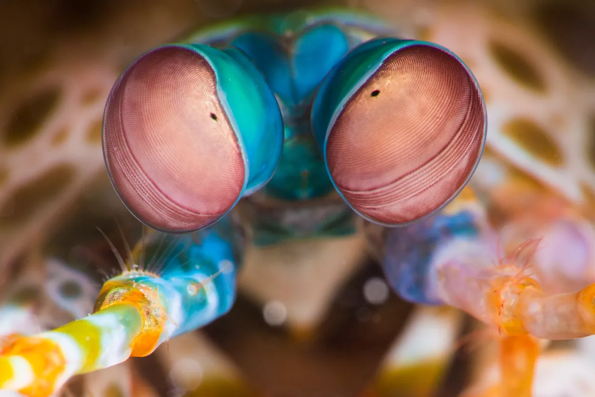

Fatos sobre o Stomatopoda
Stomatopoda (ou estomatópode), chamados popularmente de tamarutacas ou de lacraias-do-mar no Brasil, é uma ordem de crustáceos marinhos da subclasse Hoplocarida, que agrupa cerca de 400 espécies, caracterizadas principalmente pela morfologia da segunda pata torácica, que é modificada em apêndice subquelado, lembrando uma pata de louva-a-deus.
Descrição
Existem mais de 500 espécies de estomatópodes com uma variedade de tamanhos e de cores. Como outros crustáceos, o Stomatopoda possui uma carapaça ou concha. Suas cores variam do marrom aos tons vívidos do arco-íris.
Visão
Esses animais possuem o mais complexo sistema de visão de cores do mundo animal, pois enxergam 12 cores primárias, correspondentes aos 12 pigmentos distintos presentes em sua retina.
O sistema de visão dos estomatópodes possui doze cones sensíveis à luz e outros quatro que filtram a luz (16 cones no total), o que lhes permite ver cores polarizadas e imagens multiespectrais.[6]
Como cada cone pode ver cerca de 100 cores, os estomatópodes são capazes de ver 1024 cores, ou seja, 1 septilhão de cores. Em comparação, o olho humano vê 106 cores, ou seja, 1 milhão de cores apenas. A visão dos estomatópodes é sensível à luz ultravioleta, mas ainda é desconhecido se ela pode distinguir a luz infravermelha.
Reprodução e Ciclo de Vida
Em média, os estomatópodes vive cerca de 20 anos. Durante sua vida, ele pode se reproduzir de 20 a 30 vezes. Em algumas espécies, a única interação entre machos e fêmeas ocorre durante o acasalamento. A fêmea põe ovos em sua toca ou fica com ela. Os camarões acasalam em relacionamentos monogâmicos e duradouros, com ambos os sexos cuidando dos ovos. Após a eclosão, a prole passa três meses como zooplâncton antes de mudar para a forma adulta.
Alimentação
É um caçador solitário e recluso. O animal mata desdobrando rapidamente suas garras com uma aceleração surpreendente de 102.000 m/s2 e velocidade de 23 mps (51 mph) ou aproximadamente 80km/h. O ataque é tão rápido que ferve a água entre o camarão e sua presa, produzindo bolhas de cavitação. Quando as bolhas entram em colapso, a onda de choque resultante atinge a presa com uma força instantânea de 1.500 newtons ou 152,96 kgf. Portanto, mesmo se o camarão errar o alvo, a onda de choque pode atordoá-lo ou matá-lo.
Presas típicas incluem peixes, caramujos, caranguejos, ostras e outros moluscos.